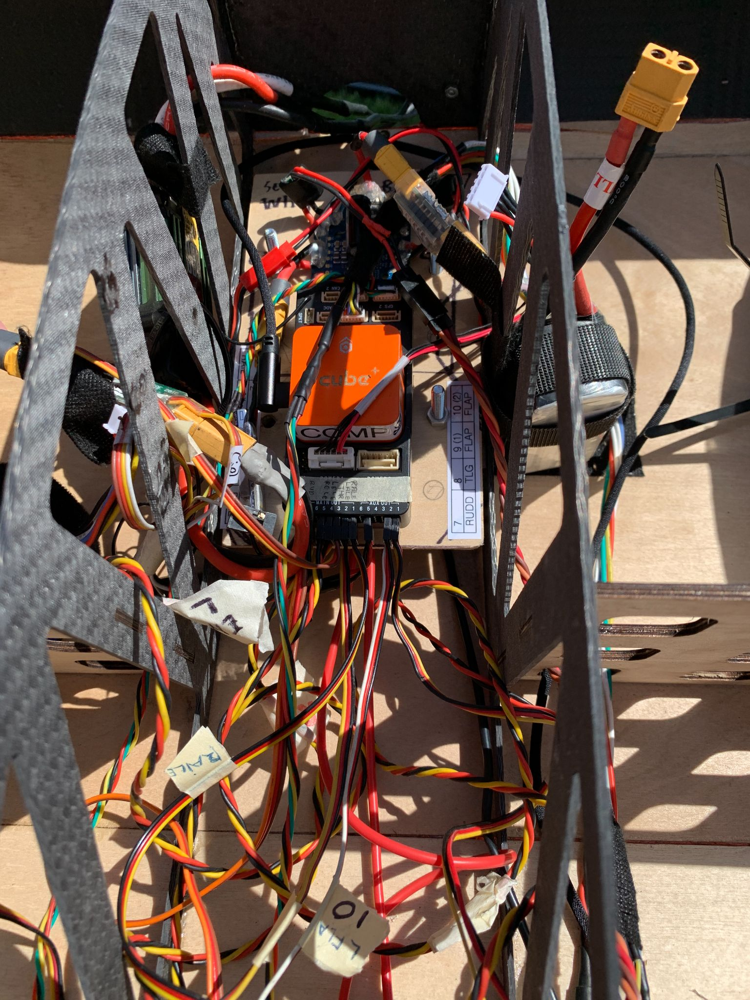
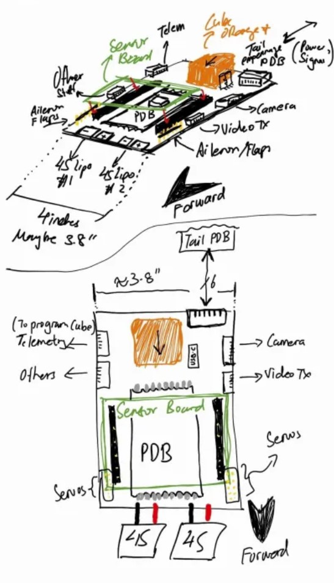
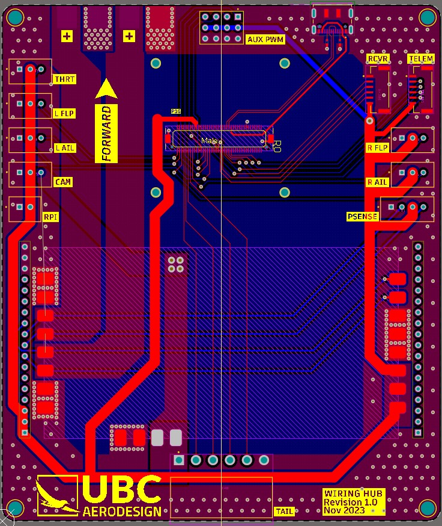

UBC AeroDesign Wiring Hub
Learning
- PCB design using Altium.
- Electrical sensor integration and signal protection.
- PCB manufacturing and troubleshooting/testing.
Project Overview
As part of my role on the avionics team at UBC AeroDesign, I designed a two-layer wiring hub PCB that acts as the central "motherboard" of the plane. The board is responsible for distributing power and communication to the 10+ sensors, control surfaces, and other powered peripheral components. The board also serves as the mounting surface for the Cube Orange flight controller, a buck converter power distribution board, and a sensor and communications PCB.
Background
The planes that UBC AeroDesign builds include 10+ sensors, control surface connections, and other powered peripheral components. Power and communication used to be routed to each of these individually, which left the aircraft with a cluttered wiring harness.

The wiring hub solves this issue by acting as the "motherboard" of the plane. Power and communication to every component on the plane will be routed from this single board. Moreover, the wiring hub also serves as the centralized mounting surface for the rest of the avionics system. This includes the Cube Orange flight controller, a power distribution board, and a sensor and communications board. The wiring hub acts as the "motherboard" of the plane. Power and communication to every component on the plane is distributed from this PCB. Moreover, the wiring hub acts as a centralized housing surface for other electrical components. These include the Cube Orange flight controller, a buck converter power distribution board, and a sensor board for communication and sensor functionality.

Above is an early sketch of the wiring hub design. The Cube Orange mounts to the hub, the power distribution board is soldered directly on, and the sensor and communications board attaches on top via pin headers. JST headers are located around the sides for connecting to various sensor modules, control surfaces, and other peripherals.
Design and Manufacturing

The final wiring hub design is a two-layer board carrying the pins needed to route communication signals from the Cube Orange out to every component in the plane's avionics system.
Auxiliary PWM ports were also broken out from the Cube Orange as an option for future expansion.
I implemented a USB connector for flashing the Cube Orange, but I routed it without differential pair tracing or protection. As the traces are short, this caused no problems in practice. However, it's the first thing I would modify in a revision.

The manufacturing and testing of the board was straightforward. All connectors were hand-soldered. Flashing, connectivity, and system integration tests were also conducted to ensure that the wiring hub was working as expected.